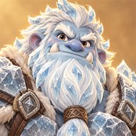

秘境探险
每趟远行固定经过四个区域、共二十四个节点。每个区域是一张十二个节点的小地图，起点为遭遇战，终点为区域首领，中间的路线由玩家自行选择；每个区域只能经过六个节点，选择一条路线就无法经过另一条。 地图上除三种战斗外，还有旧日商队、无人营地和遗迹低语等事件。这些事件使用只在本趟远行中流通的盘缠，无法使用跨趟累积的金币。 每趟远行有 10 点士气。战斗失利不会直接结束远行：每有一名敌人未被击倒，士气减少 1 点，首领减少 3 点，该站没有收成；区域首领战败时无法领取首领馈赠，但可以前往下一区域。士气降至 0，或者最终首领战败，远行结束。营地的「休整」可以回复 3 点士气。精锐哨卡的守军更强，打赢后可以分别选择一次技能与藏品，另得一件藏品，但打赢也会使士气减少 1 点（最低保留 1 点）。每个区域的精锐、宝库、商队与遗迹数量固定，分布在不同的路线上，选择一条路线就要放弃另一条路线上的收益；商队若带着稀有藏品，地图上会提前标出。 区域名册共 6 套（晨风林缘、苔岩幽径、雾隐林沼、霜叶密林、余烬枯林、古木遗庭），每趟使用其中四套，首尾固定，中间两套按种子抽取。 远行的难度逐档解锁：每通关一档即可挑战下一档，难度越高，附加的规则越多，包括更多区域威胁、更强的首领护卫、更多的诅咒和更少的药水。 藏品只在本趟远行中生效，等级、金币和装备则长期保留。路线为「稀有」的藏品不会出现在常规藏品选择中：荒废宝库、精锐哨卡、营地祈愿、商队与遗迹的藏品选择偶尔会摆出一件，宝库与精锐哨卡的机会更大；旧日商队的「旅人的心得」机会最大，购买前会写明这一车带着哪一件。
| 藏品 | 路线 | 效果 | 配合 |
|---|---|---|---|
猎手印记 | 收割 | 普通攻击和技能命中生命不高于 35% 的目标时，伤害提高 40%。 | 适合收割高生命的首领。 |
术式屏障 | 护盾 | 每次成功施放技能后，获得 8% 最大生命的护盾，不叠加。 | 搭配碎风屏障，让小护盾反复触发爆发。 |
长风之力 | 可叠加 | 本次远行的攻击提高 10%，多次选择加算。 | 同时增强普攻、攻击技能与反伤。 |
常青之躯 | 可叠加 | 本次远行的最大生命提高 12%，多次选择加算。 | 同时增强按生命计算的护盾和药水。 |
灵风感悟 | 可叠加 | 本次远行的技能伤害提高 15%，多次选择加算。 | 强化主动技能，适合以技能为核心的搭配。 |
锋锐 | 可叠加 | 本次远行的暴击伤害提高 25%，多次选择加算。 | 专注、斩首者这类「必定暴击」的效果会一起变强。 |
坚壁 | 可叠加 | 本次远行的护甲提高 8 点，多次选择加算。 | 对付数量多、单次伤害低的敌群最划算。 |
过载 | 施法 | 技能冷却缩短 1 回合（最低 1），但每次施放技能失去 3% 最大生命，不会因此倒下。 | 配合术式屏障或常青之躯，用生命换出手次数。 |
孤注一掷 | 施法 | 技能伤害提高 80%，但最大生命降低 5%。 | 把生命押在技能上；配回响王座或护盾流才站得住。 |
双重打击 | 连击 | 普通攻击命中后，立即对同一目标追加一次 65% 攻击的普通攻击。 | 追风连击、吸血和霜刃都按命中次数结算。 |
苦修 | 反击 | 本次远行不再携带药水，改为每回合回复 5% 最大生命。 | 禁药威胁对你无效；打得越久越占优。 |
霜刃 | 连击 | 每第 3 次普通攻击命中，使目标冻结 1 回合。 | 冻住兽人狂徒和首领，法师可接碎冰或闪电链。 |
势如破竹 | 收割 | 每击杀一名敌人，本场攻击提高 8%，可累计。 | 敌人越多越强，精锐哨卡是它的主场。 |
灼烧之种 | 施法 | 技能命中的敌人被点燃，之后 3 回合每回合承受 30% 攻击的伤害。 | 范围技能一次点燃一片；燃烧不会被闪避。 |
裂甲 | 连击 | 每第 3 次普通攻击命中，使目标破甲 2 回合，期间护甲归零。 | 专治兽人盾卫、石甲督军和重甲威胁。 |
磐石之身 | 反击 | 受到的伤害降低 15%，但你的攻击降低 8%。 | 把胜负从抢输出换成熬回合，适合反伤与持续回复。 |
饮血 | 连击 | 吸血提高 15%（总上限仍是 50%）。 | 双重打击、追风连击的每一次命中都会回血。 |
临危一线 | 护盾 | 每场战斗生命第一次降到 40% 以下时，立刻回复 25% 最大生命并获得 20% 最大生命的护盾。 | 每场一次，等于多带一瓶药；碎风屏障可以接着触发。 |
破阵 | 收割 | 对生命高于 80% 的目标伤害提高 30%。 | 和猎手印记互补：一个抢开场，一个收尾。 |
追风连击 | 连击 | 每第 2 次命中的普通攻击，追加 80% 攻击的必中伤害。 | 多用普攻，后撤射击也能积累连击。 |
荆棘之心 | 反击 | 每次受击（含护盾吸收），向攻击者反弹 40% 攻击的必中伤害。 | 护盾吸收伤害时也会触发，适合持久作战。 |
风之庇护 | 护盾 | 第 1、4、7…回合获得 30% 最大生命的护盾，不叠加。 | 三个职业都能获得周期护盾。 |
回响风暴 | 连击进阶 | 追风连击的追加伤害提高到 140%，并波及目标相邻的敌人。 | 与追风连击组合，把普攻变成范围输出。 |
复苏荆棘 | 反击进阶 | 荆棘之心每次造成伤害后，回复该次伤害 50% 的生命（向上取整）。 | 与荆棘之心组合，边承受攻击边恢复。 |
碎风屏障 | 护盾进阶 | 护盾被击碎时，对自身 2 格内敌人造成 100% 攻击的必中伤害。 | 风之庇护、战吼、奥术护盾均可触发。 |
收割仪轨 | 收割进阶 | 猎手印记的阈值提高到 50%，并且每次击杀回复 8% 最大生命。 | 与猎手印记组合，清场越快活得越久。 |
霜蚀 | 霜刃进阶 | 霜刃改为每第 2 次普通攻击触发，并且对冻结目标的伤害提高 30%。 | 与霜刃组合，控场的同时也是增伤。 |
超载回路 | 过载进阶 | 过载的生命消耗减半，并且每次施放技能后本场攻击提高 6%，最多 5 层。 | 与过载组合，把技能轮转本身变成输出来源。 |
旋风斩残卷 | 残卷 | 本次远行额外携带「旋风斩」：对所有相邻敌人各造成 130% 伤害并破甲 2 回合。 | 给远程职业一手贴脸清场，也是对付重甲威胁的答案。 |
战吼残卷 | 残卷 | 本次远行额外携带「战吼」：获得 35% 最大生命的护盾，并震慑相邻敌人 2 回合。 | 护盾流的起手；碎风屏障和术式屏障都认它。 |
翻滚残卷 | 残卷 | 本次远行额外携带「翻滚」：后撤一格并射击，闪避下一次攻击并进入专注。 | 脆皮职业的保命键，专注还能让下一记技能必定暴击。 |
狙击残卷 | 残卷 | 本次远行额外携带「狙击」：射程 +2，对其中生命最高的敌人造成 250% 必中伤害。 | 专杀后排的哥布林巫医和萨满，近战职业靠它够到够不着的目标。 |
冰霜新星残卷 | 残卷 | 本次远行额外携带「冰霜新星」：对 2 格内所有敌人造成 110% 伤害并冻结，贴身的敌人被冲开 1 格。 | 一次冻住一群；霜蚀、碎冰和闪电链都吃这个。 |
奥术护盾残卷 | 残卷 | 本次远行额外携带「奥术护盾」：获得 35% 最大生命的护盾，直到被打碎。 | 没有护盾手段的职业靠它开一条护盾流。 |
闪电链残卷 | 残卷 | 本次远行额外携带「闪电链」：依次击中最多 3 名靠近的敌人，命中冻结目标时导电增伤。 | 和冰霜新星是一对；没有范围手段的职业最缺这个。 |
回春残卷 | 残卷 | 本次远行额外携带「回春」：立刻回复 15% 最大生命，之后 3 回合每回合再回复 8%。 | 药水之外的第二条续航线；苦修和禁药威胁下尤其值钱。 |
烟雾弹残卷 | 残卷 | 本次远行额外携带「烟雾弹」：闪避接下来 2 次攻击，并使相邻敌人易伤 2 回合。 | 躲过一轮集火，顺手把这一轮的输出放大。 |
唤狼残卷 | 残卷 | 本次远行额外携带「唤狼」：召唤 1 只灵狼为你作战 8 回合，生命与攻击按你的属性折算。 | 多一个挡刀的，也多一份输出；独行的职业第一次有了帮手。 |
潮涌之冠 | 首领藏品 | 每 3 个回合额外行动一次，但最大生命降低 5%。 | 一回合只做得了一个动作，多出来的那次出手比任何百分比都值钱。 |
裂空之刃 | 首领藏品 | 技能伤害提高 220%，但最大生命降低 5%。 | 技能流的天花板；血薄了一截，别让自己站在挨打的位置上。 |
饮血王冠 | 首领藏品 | 每次击杀回复 15% 最大生命、本场伤害提高 12%（可叠加），并让所有技能冷却缩短 1 回合，但此后每场战斗只拿到一半盘缠。 | 敌人越多滚得越快；续航做进了战斗里，代价是这一趟逛不起商队。 |
孤高之誓 | 首领藏品 | 攻击提高 60%，但本次远行的药水携带量减半。 | 把续航全部换成输出；配苦修或回春才敢这么走。 |
回响王座 | 首领藏品 | 技能伤害提高 60%，技能命中时回复该次伤害 45% 的生命，但受到的伤害提高 6%。 | 技能打得越狠回得越多；范围技能一次命中一片，回复也跟着翻倍。 |
逆命之心 | 首领藏品 | 每场战斗第一次倒下时以 40% 生命站起来，但此后每次收成少一个选项。 | 用往后更窄的选择面换一条命；越是硬仗越划算。 |
镜甲王冠 | 首领藏品 | 受到的伤害降低 25%，并将其 150% 反弹给攻击者，但最大生命降低 8%。 | 和荆棘、反击流叠在一起，让挨打本身成为输出。 |
千钧一击 | 首领藏品 | 每次施放技能后，立刻对射程内生命最低的敌人追加一次普通攻击；普通攻击伤害提高 100%，并对目标身边的敌人造成 50% 的波及伤害。但此后每次收成少一个选项。 | 技能一放，普攻跟上；双重打击、追风连击和霜刃都按普攻命中触发。 |
惊雷连打 | 连击 | 每第 4 次普通攻击命中，引下一道落雷，对目标及其身边的敌人造成 200% 攻击的必中伤害。 | 连击集齐 2 件后技能命中也计数，范围技能一次能攒下好几次。 |
回旋之刃 | 连击 | 追风连击、回响风暴与双重打击命中后，弹向最近的另一名敌人，造成该次伤害 100% 的伤害。 | 敌人越多越划算；连击集齐 3 件后追加伤害更高，弹出去的那一下也跟着提高。 |
架势 | 反击 | 受到攻击时有 25% 的概率架开：这一下伤害减半，并立刻对攻击者造成 150% 攻击的伤害。 | 挨打越多触发越多；配磐石之身、镜甲王冠站得更稳。 |
背水 | 反击 | 生命低于 50% 时，造成的伤害提高 40%。 | 半血以下反扑；苦修与复苏荆棘让人在半血附近撑得更久。 |
棱光护壁 | 护盾 | 每回合开始时，若身上有护盾，对身边的敌人造成当前护盾 40% 的伤害。 | 护盾越厚伤害越高；护盾集齐 2 件后护盾加厚，正好接上。 |
余温 | 护盾 | 护盾被击碎时，回复 10% 最大生命。 | 风之庇护每三个回合一层，碎一次回一次。 |
搜刮 | 收割 | 战斗胜利时，每击杀一名敌人多得 2 点盘缠。 | 敌人越多收入越多，商队里多买得起一样东西。 |
斩决 | 收割 | 你的攻击使首领以外的敌人生命降到 15% 以下时，直接将其击倒。 | 省下最后一刀；收割集齐后的连斩接着这一下再行动。 |
引线 | 施法 | 燃烧造成的伤害提高 150%，持续时间延长 2 回合。 | 灼烧之种与施法集齐 3 件都会点燃；烧得越久，余烬爆炸越容易连起来。 |
共振 | 施法 | 每施放 3 次技能，下一个技能的伤害提高 250%。 | 技能放得越勤转得越快；过载缩短冷却，正好多放几次。 |
雪崩之势 | 势能进阶 | 势如破竹每层改为 13%，并且每次击杀让所有技能冷却缩短 1 回合。 | 与势如破竹组合，敌人越多滚得越快。 |
无影连击 | 稀有 | 普通攻击命中后，立即再进行一次 200% 攻击的普通攻击；目标已倒下时改为攻击射程内的另一名敌人。追加的这一下同样触发普通攻击的效果。 | 追风连击、霜刃、惊雷连打的计数快一倍，双重打击也随之多打一次。 |
以牙还牙 | 稀有 | 受到攻击后，立即对攻击者进行一次 100% 攻击的普通攻击，不受距离限制。 | 反击打出的是真正的普通攻击：连击类藏品与吸血一并生效。 |
千层壁 | 稀有 | 获得的护盾改为叠加，最多叠加至 100% 最大生命；每回合开始时获得 15% 最大生命的护盾。 | 风之庇护、术式屏障不再互相覆盖，护盾越叠越厚。 |
死神之镰 | 稀有 | 敌人倒下时，回复 8% 最大生命，并对其身边的敌人造成该敌人最大生命 50% 的伤害；波及首领时改为造成 500% 攻击的伤害。 | 被波及倒下的敌人会再波及身边的敌人，扎堆的敌人可能接连倒下。 |
无尽法典 | 稀有 | 技能伤害提高 50%；施放技能后有 30% 的概率不进入冷却；每回合开始时，对生命最低的敌人造成 70% 攻击的伤害，技能伤害加成对其生效。 | 技能伤害加成越高，每回合开始时的这一下越重；不施放技能也会触发。 |
命运之轮 | 稀有 | 每次收成多一个选项；遗迹中赌运气的成功率提高 20 个百分点，最高 90%；稀有藏品出现的概率翻倍；每场战斗第一次倒下时，有 50% 的概率以 30% 生命站起来。 | 越早拿到越划算：此后每一次选择都更宽，赌运气也更稳。 |
藏品流派
藏品分为五个流派，同一流派的藏品集齐 2 件、3 件时各有一档额外效果；进阶藏品与首领藏品也计入所属流派。已有某一流派的藏品时，藏品选择会优先摆出同一流派的下一件。
| 流派 | 藏品 | 2 件 | 3 件 |
|---|---|---|---|
连击 | 双重打击、霜刃、裂甲、饮血、追风连击、回响风暴、霜蚀、千钧一击、惊雷连打、回旋之刃、无影连击 | 技能每命中一名敌人，也计作一次普通攻击命中，触发追风连击、霜刃与裂甲。 | 追风连击、回响风暴与双重打击的追加伤害提高 300%。 |
反击 | 苦修、磐石之身、荆棘之心、复苏荆棘、镜甲王冠、架势、背水、以牙还牙 | 每次受到攻击，对攻击者造成 80% 攻击的反击伤害。 | 反击与反弹的伤害提高 150%，反击同时波及攻击者身边的敌人。 |
护盾 | 术式屏障、临危一线、风之庇护、碎风屏障、棱光护壁、余温、千层壁 | 获得的护盾提高 80%。 | 有护盾时造成的伤害提高 60%；护盾被击碎时，对 2 格内的敌人造成 250% 攻击的伤害。 |
收割 | 猎手印记、势如破竹、破阵、收割仪轨、饮血王冠、搜刮、斩决、雪崩之势、死神之镰 | 你的行动击倒敌人后，立刻再行动一次，每回合最多 1 次。 | 再行动每回合最多 2 次；此后本次远行每击杀一名敌人，攻击永久提高 1%，最多提高 80%。 |
施法 | 过载、孤注一掷、灼烧之种、超载回路、裂空之刃、回响王座、引线、共振、无尽法典 | 技能伤害提高 80%。 | 技能命中的敌人会被点燃；燃烧中的敌人倒下时爆炸，对身边的敌人造成 300% 攻击的伤害并将其点燃。 |
风行传说
风息林间的风停了。每趟远行按种子抽取一段风行传说，讲的都是林间的风为何止息、如何让它重新吹起。开端、线索、终章分别落在前三个区域里用旗帜标出的节点上：开端与线索是遗迹事件，推进时附带一次藏品选择，线索中的选择会影响终章；终章由这段传说专属的首领坐镇，打赢后可从三件稀有藏品中挑一件，并获得这段传说特有的报酬；走完之后，林间的风会重新吹起。错过一幕，这段传说就此中断。
| 传说 | 开端 | 线索 | 终章 | 终章首领 | 报酬 |
|---|---|---|---|---|---|
止息的风铃 | 无声的风铃 | 藤蔓封住的石洞 | 困风之穴 | 噬风兽 | 稀有藏品任选一件，本次全部技能等级 +1 |
最后的风行者 | 石碑下的行囊 | 手记里的哨所 | 林道尽头 | 断风刀客 | 稀有藏品任选一件，他留下的盘缠 +100 |
被锁的风灵 | 溪上的微光 | 缠满锁链的树林 | 锁风祭坛 | 锁风术士 | 稀有藏品任选一件，风灵驱除你身上全部诅咒并回复 2 点士气 |
诅咒
诅咒是只在本趟远行中生效的负面效果，每种至多一件。难度 2 起出发时带着一件随机诅咒，难度 7 起每击败一名区域首领再获得一件；遗迹中的部分选项也会带来诅咒，其中有些要看运气。旧日商队的「驱邪的符水」、无人营地的「驱邪」和部分遗迹事件可以驱除诅咒。
| 诅咒 | 效果 |
|---|---|
疲惫 | 每场战斗开场时，生命只有最大生命的 85%。 |
破绽 | 受到的伤害提高 12%。 |
迟缓 | 每场战斗的第一个回合无法行动。 |
钝化 | 技能伤害降低 20%。 |
干渴 | 每场战斗少带 1 瓶药水。 |
厄运 | 每次收成少一个选项，至少保留两个。 |
窘迫 | 战斗得到的盘缠减半。 |
凶兆 | 精锐哨卡与区域首领的攻击提高 15%。 |
心魔 | 每回合开始时失去 2% 最大生命，不会因此倒下。 |
起程锦囊
出发前选择一个锦囊，效果只在本趟远行中生效。每通关一档更高的难度，就会解锁一种新的锦囊。
| 锦囊 | 解锁 | 效果 |
|---|---|---|
轻装上路 | 初始拥有 | 什么都不带，照常出发。 |
行囊 | 通关难度 0 | 出发时就带着 50 盘缠，第一个商队就买得起东西。 |
药囊 | 通关难度 2 | 这一趟每场多带 1 瓶药水。 |
旧识 | 通关难度 4 | 出发时多会一个本职业的起手技能。 |
信物 | 通关难度 6 | 第一场打赢后，白送一件藏品。 |
双囊 | 通关难度 8 | 行囊和药囊一起带上：50 盘缠，每场多 1 瓶药水。 |
无尽深渊
通关第十关且角色达到 20 级后解锁。深渊逐层向下，怪物等级每层提高 2 级，每层带有 1～3 条固定词缀，要求玩家调整打法。战斗失败时停留在当前层，获胜则记录最深层数。 每 5 层出现一只首领，依次为哥布林王、深渊领主、石甲督军、疫沼巨蟾、霜牙母狼、燃烬炉魔，之后按同样的顺序循环。首领按层数固定，所有玩家在同一层遇到的首领相同。
| 词缀 | 效果 |
|---|---|
禁药 | 本场无法使用药水。 |
迷雾 | 你的攻击射程减少 1 格，最低 1 格。 |
迟滞 | 你的技能冷却全部延长 1 回合。 |
破盾 | 你的护盾全部失效。 |
腐蚀 | 从第 2 回合起，每回合损失 2% 最大生命。 |
嗜血 | 敌人每次造成伤害，回复该伤害 30% 的生命。 |
荆棘 | 你每次命中敌人，承受该敌人攻击 40% 的必中伤害；击杀它的那一击不会被反弹。 |
狂暴 | 生命低于一半的敌人伤害提高 50%。 |
时限 | 必须在限定回合内获胜（30 回合，每层／每区域再加 3），否则视为失败。 |
重甲 | 所有敌人护甲 +8。 |
疾行 | 近战敌人每次行动多移动 1 格。 |
箭雨 | 每一波额外出现 2 名哥布林弓手。 |
蛮力 | 所有敌人攻击 +25%。 |
深渊专属敌人
常规远征的敌人在第 8 层前会全部出现，此后会陆续加入只在深渊出现的敌人。
| 登场 | 敌人 | 特性 |
|---|---|---|
第 8 层起 | 裂魂术士 | 无法闪避：咒印 每 3 回合在你脚下画一道咒印，下次行动引爆，站在上面受 180% 攻击的伤害，无法闪避；在策略中设置「避开险地再攻击」即可移开，冻结或眩晕能打断它 |
第 14 层起 | 分裂软泥 | 倒下时分裂成两只小软泥，用范围技能应对最为有效 |
第 20 层起 | 哥布林战鼓手 | 鼓声让其他敌人的普通攻击伤害提高 25%，多名鼓手的效果不叠加；它被冻结或眩晕时鼓声停止，可用远程攻击或冲锋优先击败它 |
第 26 层起 | 棘背甲虫 | 无法闪避：棘刺 你每命中它一次，棘刺扎回相当于它一次攻击的伤害，无法闪避；击杀它的那一击，以及中毒、流血、燃烧和召唤物造成的伤害不会被扎回 |
巨兽讨伐
通关第十关且角色达到 20 级后解锁，与无尽深渊同时开放。每场讨伐只有一只巨兽：巨兽占据中心及周围一圈共 7 格，不会移动，距离按到其身体边缘计算，贴近外沿即为近战距离。 由于巨兽不会移动，每只巨兽都有能够攻击远处的技能：范围技能无法闪避，单体技能可以闪避。讨伐主要考验单体输出、破甲和持续作战能力。 每只巨兽有独立的阶位：击败当前阶位后永久记录，并进入下一阶；按名单顺序击败一只巨兽后，解锁下一只。阶位表示这只巨兽已被击败的轮次，与怪物等级不同。 每提高一阶，怪物等级提高 5 级，生命按等级的 1.36 次方提高，攻击按生命倍率的 0.75 次方提高。
| 巨兽 | 第 1 阶 | 生命 | 攻击 | 护甲 | 技能 | 专属掉落 |
|---|---|---|---|---|---|---|
腐沼母巢 腐沼深处 | Lv.15 | 6480 | 116 | 10 | 产卵（每 3 回合）在身体外沿产下 2 只沼虫。 虫群护卫（常驻）每有一只沼虫活着，它受到的伤害降低 12%，最多 36%。 藤蔓拖拽（每 4 回合） 无法闪避 把 2 格外的你拖回虫群中间，并造成 60% 攻击伤害，无法闪避。 | 虫群壁垒 你周围 2 格内每有一名敌人，受到的伤害降低 6%，最多 3 名。 |
熔岩巨像 烬火熔场 | Lv.20 | 8345 | 147 | 26 | 震地（每 3 回合） 无法闪避 对 2 格内的你与召唤物造成 120% 攻击伤害，无法闪避。 投掷熔岩（其余回合）朝 2 格外的你砸下熔岩，造成 110% 攻击伤害，可以闪避。 外壳崩裂（生命降到一半）护甲减半，但攻击提高 40%。 | 熔心 普通攻击命中后，对目标周围 1 格的其他敌人各造成 50% 攻击的必中伤害。 |
蚀日龙 断脊山脊 | Lv.25 | 7700 | 160 | 12 | 烈焰吐息（每 3 回合） 无法闪避 对 3 格内的你与召唤物造成 125% 攻击伤害，无法闪避。 烈日（间隔回合）无视距离落在你头上，造成 100% 攻击伤害，可以闪避。 展翼（生命降到一半）立刻回复 15% 生命、射程 +1，之后 8 回合每回合再回复 2%。 | 龙瞳 对生命高于 50% 的目标造成的伤害提高 30%。 |
永夜守墓人 无光陵墓 | Lv.30 | 18555 | 206 | 16 | 墓土重压（每 3 回合） 无法闪避 覆盖全场，对你与召唤物造成 70% 攻击伤害，无法闪避。 亡者之握（每 4 回合） 无法闪避 把 2 格外的你拽到墓前，并造成 80% 攻击伤害，无法闪避。 起身（第一次被击倒）以 45% 生命重新站起，攻击提高 50%。每场只有一次。 | 永夜之誓 每损失 10% 最大生命，造成的伤害提高 6%，最多 40%。 |
 霜渊巨人冰封裂谷 | Lv.35 | 20500 | 270 | 14 | 冰裂（每 3 回合） 无法闪避 在你与召唤物脚下标出冰裂，它下一次行动时碎裂：仍站在上面的受到 200% 攻击伤害，无法闪避。移开一格即可躲过，冻结或眩晕它会打断冰裂。 寒冰长矛（其余回合）朝 3 格外的你掷出冰矛，造成 100% 攻击伤害，可以闪避。 永冻（生命降到一半）攻击提高 20%，冰裂改为每 2 回合一次。 | 踏冰 这一回合挪过位置时，造成的伤害提高 25%。 |
棘甲龙龟 潮礁浅滩 | Lv.40 | 31000 | 315 | 18 | 缩壳（每 4 回合） 无法闪避 缩进壳里、这次不出手，直到下一次行动：你的攻击与技能对它的伤害降低 60%，每命中一次，棘刺扎回它 30% 攻击的伤害，无法闪避。冻结或眩晕它会让这次缩壳落空。 潮涌（每 3 回合） 无法闪避 掀起浪潮，对 2 格内的你与召唤物造成 110% 攻击伤害，无法闪避。 水炮（其余回合）朝 3 格外的你喷出水炮，造成 100% 攻击伤害，可以闪避。 骨刺暴长（生命降到一半）攻击提高 25%，缩壳时的棘刺反伤提高一半。 | 潮甲 生命低于 60% 时，受到的伤害降低 20%。 |
吞舟巨鲸 鲸落湾 | Lv.45 | 39000 | 355 | 16 | 巨浪（每 4 回合）掀起巨浪、这次不出手：冲掉你身上所有增益、护盾、翻滚与隐匿，并把你推后 1 格。 甩尾（每 3 回合） 无法闪避 甩动巨尾，对 2 格内的你与召唤物造成 115% 攻击伤害，无法闪避。 喷潮（其余回合）朝 3 格外的你喷出水柱，造成 100% 攻击伤害，可以闪避。 怒潮（生命降到一半）攻击提高 20%，巨浪改为每 3 回合一次。 | 鲸吞 对生命低于 35% 的目标造成的伤害提高 30%。 |
擎天石猿 猿啸峰 | Lv.50 | 35000 | 350 | 20 | 石皮（始终）暴击对它只按普通伤害计算，召唤物的暴击也一样。 捶地（每 3 回合） 无法闪避 双拳捶地，对 2 格内的你与召唤物造成 120% 攻击伤害，无法闪避。 投石（半血后，每 3 回合）朝你掷出一块巨石，造成 100% 攻击伤害（可以闪避），巨石落在你身旁变成岩石，最多落下 6 块，战场会越来越拥挤。 飞石（其余回合）朝 3 格外的你掷出碎石，造成 90% 攻击伤害，可以闪避。 狂怒（生命降到一半）攻击提高 20%，开始投石。 | 撼山 普通攻击命中后，有 18% 概率使目标眩晕 1 回合。 |
风行大地
通关第十关后解锁，与秘境探险、日常历练同时开放。这是一张逐步揭开的六边形大地图，同一账号的全部角色共用一片世界，进度会一直保留：驱散的迷雾、完成的地点、开辟的道路和采集的材料都不会丢失。 进入时使用角色当前的技能、规则和装备，在其他玩法中获得的成长会立即生效。移动不消耗任何资源；时间只在大地图和家园中流逝，一天为 10 分钟，黄昏过后进入夜晚，战斗中和离开玩法时时间暂停。经过的格子会自动采集，资源两天后重新生长；可以在家园的营火旁用采集的材料制作工具。 离家越远，敌人越强。战斗失败不会失去任何东西；同一地点的战斗种子固定，可以在两次战斗之间调整规则或更换携带的技能，详情卡中的「试打」会用另一组种子估算胜率。 当前区域：裂谷之风。
障碍
落石、深涧、石门、瘴气、深湖和断桥挡住了通往首领、遗迹和裂谷的路。备齐所需的工具或材料，走到跟前即可打开，打开后永久通行；材料在打开时消耗，工具保留。
| 障碍 | 通往 | 需要 |
|---|---|---|
塌方 | 银丘 | 石头 ×6、木板 ×4 |
旧城门 | 锈城 | 铁锭 ×3、木板 ×6 |
断桥 | 裂谷 | 铁锭 ×4、石砖 ×6 |
落石 | 烬火熔场 | 铁镐 |
深涧 | 断脊山脊 | 木板 ×4、绳子 ×3 |
封印石门 | 无光陵墓 | 火药 ×3 |
瘴气 | 古木遗庭 | 药草 ×3 |
深湖 | 霜封遗迹 | 狼皮 ×3、绳子 ×2 |
沙埋城门 | 琥珀沙海 | 铁锭 ×4、齿轮 ×3、木板 ×8 |
断云桥 | 云顶高原 | 绳子 ×6、木板 ×8、铁锭 ×3 |
断崖索道 | 云中古坛 | 绳子 ×5、铁锭 ×2、木板 ×4 |
海崖栈道 | 翠渊海岸 | 木板 ×10、绳子 ×6、铁锭 ×4 |
断索桥 | 天穹石林 | 绳子 ×8、木板 ×8 |
北台索桥 | 石林北台 | 绳子 ×6、木板 ×6 |
南台索桥 | 石林南台 | 绳子 ×6、木板 ×6 |
护符
获得后永久生效，只在风行大地的战斗中起作用。击败巨兽领地可以获得对应的专属战利品，其余护符来自精英、首领和沿途事件。地形类护符使开战位置也成为一种选择。
| 护符 | 类别 | 效果 | 来源 |
|---|---|---|---|
林中猎手 | 地形 | 从灌木中发动伏击时，该次攻击的伤害额外提高 50%。林地的战场中灌木最多。 | 精英、首领或事件 |
高处的风 | 地形 | 站在高地上攻击时，伤害提高 15%；远程攻击的射程额外增加 1 格。 | 精英、首领或事件 |
冰上舞步 | 地形 | 站在冰面上攻击时，伤害不再因冰面打滑而降低。 | 精英、首领或事件 |
焦土战旗 | 地形 | 免疫熔岩伤害：站在熔岩上或被击退至熔岩中时，均不会损失生命。 | 精英、首领或事件 |
行脚铃 | 旅途 | 每移动一格，驱散周围 5 格内的迷雾（原为 4 格）。 | 精英、首领或事件 |
旅人护符 | 战斗 | 每场战斗开始时，获得最大生命 20% 的护盾。 | 精英、首领或事件 |
熔心余烬 | 战利品 | 每场战斗开始时，对全体敌人造成 80% 攻击的灼烧伤害。 | 熔岩巨像 |
龙瞳 | 战利品 | 暴击率提高 12%。 | 蚀日龙 |
守墓人的灯 | 战利品 | 每场战斗中首次倒下时，以 30% 生命重新站起。 | 永夜守墓人 |
狼牙项链 | 战斗 | 攻击提高 6%。 | 精英、首领或事件 |
石肤护符 | 战斗 | 受到的伤害降低 8%。 | 精英、首领或事件 |
金羽 | 战斗 | 暴击率提高 8%。 | 精英、首领或事件 |
回春坠 | 战斗 | 从第 2 回合起，每回合回复最大生命的 2%。 | 精英、首领或事件 |
蝎尾针 | 战斗 | 对中毒的敌人造成的伤害提高 15%。 | 精英、首领或事件 |
雷羽 | 战斗 | 闪避率提高 8%。 | 精英、首领或事件 |
龟甲 | 战利品 | 受到 2 格外的敌人攻击时，伤害降低 25%。 | 棘甲龙龟 |
霜渊之心 | 战利品 | 每场战斗开始时，冻结距离最近的 2 名敌人 1 回合。 | 霜渊巨人 |
琥珀坠 | 战斗 | 前 3 回合受到的伤害降低 20%。 | 精英、首领或事件 |
海妖之泪 | 战斗 | 击败一名敌人时，回复 8% 最大生命。 | 精英、首领或事件 |
守灵玉 | 战斗 | 每受到一次攻击，本场战斗中受到的伤害降低 3%，最多叠加 5 层。 | 精英、首领或事件 |
鲸歌螺 | 战利品 | 每 3 回合掀起一次巨浪，对全体敌人造成 60% 攻击的伤害。 | 吞舟巨鲸 |
巨猿石拳 | 战利品 | 每场战斗开始时，向生命最高的敌人投出巨石，造成 200% 攻击的伤害，并使其眩晕 1 回合。 | 擎天石猿 |
珊瑚珠串 | 战斗 | 每回合的移动距离增加 1 格。 | 精英、首领或事件 |